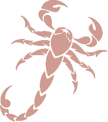

<!-- Fixed navbar -->
<nav id="header" class="navbar fixed-top">
  <div id="header-container" class="container navbar-container" [hidden]="!isSidebarOpen">
    <div class="navbar-logo">
      
    </div>
    <div id="navbar">
      <ul id="header-items-container">
        <li class="header-item" *ngFor="let m of menu">
          <a class="nav-link theme" [routerLink]="[m.link]" routerLinkActive="active-link" [routerLinkActiveOptions]="{exact: true}">{{m.name}}</a>
        </li>
      </ul>
    </div>
    <i class="icofont-ui-theme theme-btn theme" (click)="loadTheme()"></i>
  </div>
  <div class="sidebar-icon-container">
    <i class="icofont-navigation-menu theme" (click)="toggleSidebar()"></i>
  </div>
</nav>
<!-- sidebar -->
<div class="sidebar theme-bg" [hidden]="isSidebarOpen">
  <div class="sidebar-logo">
    
  </div>
  <div class="sidebar-container">
    <ul id="sidebar-items">
      <li class="sidebar-item d-flex" *ngFor="let m of sidebar">
        <i class="{{m.icon}}"></i>
        <a class="nav-link theme" [routerLink]="[m.link]" routerLinkActive="active-link" [routerLinkActiveOptions]="{exact: true}">{{m.name}}</a>
      </li>
    </ul>
  </div>
  <i class="icofont-ui-theme sidebar-theme-btn theme" (click)="loadTheme()"></i>
</div>
<!-- sidebar -->